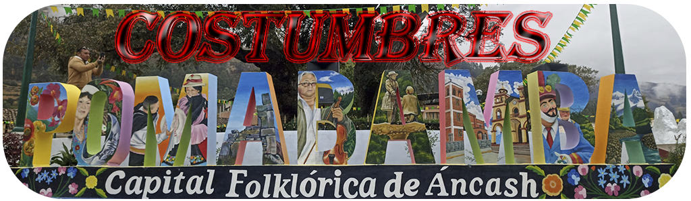

|  |
|
|
|
AnacaSu nombre procede del protoquechua hanaqkaq ( de la parte alta en contraposición a los yuncas, de la zona baja).Es una danza ejecutada por seis mujeres jóvenes o ñustas4(denominación Inca); que ante la mirada de los espectadores, recorren la Plaza de Armas y principales calles de la ciudad, en ciertas ocasiones intervienen una capitana y dos guías conocidos como Yuncas que sirven como dirigentes de las evoluciones que realizan las anacas, y se encargan de custiodar solícitamente a las bailarinas de los arrebatos de algún espectador que intente propasarse | HuancaSu nombre proviene del quechua "wanca", piedra grande2 Danza de origen colonial,3 representa a los hidalgos españoles o criollos ]que se divertían danzando magistralmente después de los choques bélicos como parte de la celebración de las victorias obtenidas; en otras ocasiones solemnizaban las festividades religiosas. Quizá constituyan una mezcla de la danza nativa de los guerreros Huancas del centro del país con los aires españoles, aunque es notoria su ascendencia europea por lo que también se le conoce como la "Danza de las espadas". |
NOMBRES Y APELLIDOS: JORDAN ESLAVA GONZALEZ |
CORREO: GONZALEZGONZALEJORDAN2001@GMAIL.COM |